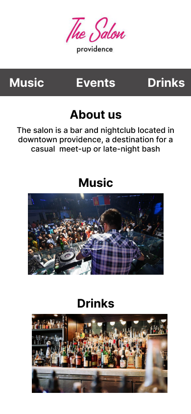
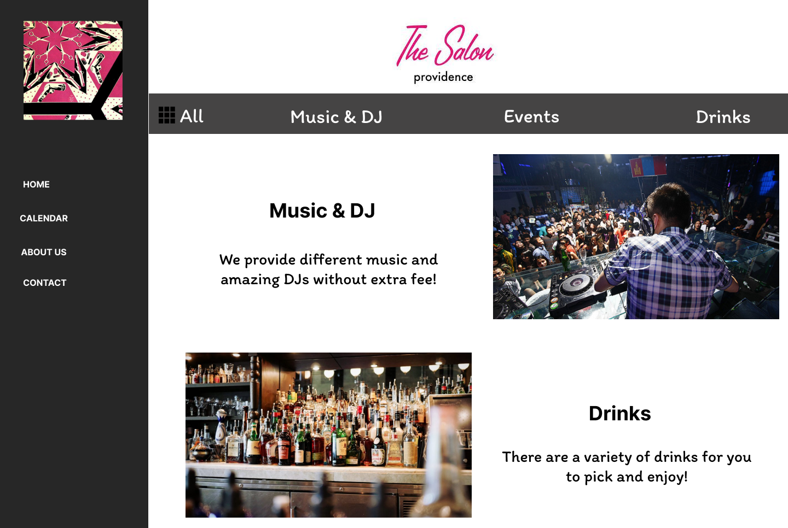

Part 2: Visual Redesign
High-Fidelity Prototyping

Mobile

Tablet

Desktop
In following sections, we first analyze and identify flaws in an existing simple website and then redesign it by creating prototypes and responsive website.
This is a homepage for a local bar in Providence. I chose to redesign it because I think it is too simple to provide the basic information that users need to know.
By using WebAIM WAVE, I found several errors and warnings of accessibility:
Mobile
Tablet
Desktop